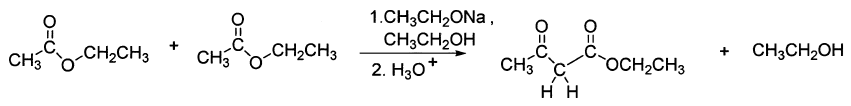
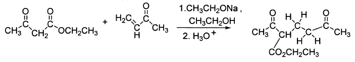
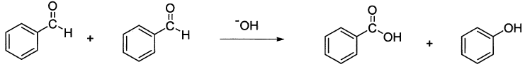
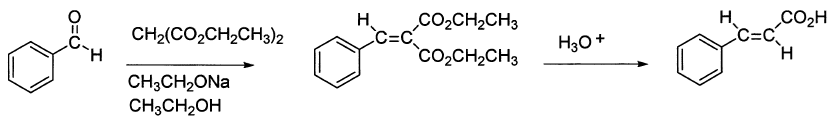
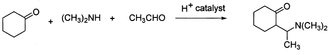

令和元年度（再試験） 問3 有機化学及び燃料
下記の人名反応について、反応式が誤っているものはどれか。
①

②

③

④

⑤

正答
③
カニッツァロ反応は、α水素を持たないアルデヒドを強塩基性条件下で反応させると、対応するアルコールとカルボン酸塩が1:1の比率で生成する不均化反応です。3番の生成物はカルボン酸とアルコールなのですが、アルコールはPh-CH2-OHとアルデヒド由来のメチレン基が不足しています。
他の選択肢にある反応は以下のような内容です。
- Claisen縮合：2つのエステル間またはエステルとケトン間で反応しβ-ケトエステル（1,3-ジカルボニル化合物）を得る
- Michael付加：α,β-不飽和カルボニル化合物への求核付加反応によりβ位に求核剤が付加した飽和カルボニル化合物を得る
- クネーフェナーゲル縮合：活性メチレン化合物とアルデヒドまたはケトンを縮合させてアルケンを得る反応
- マンニッヒ反応：第二級アミン・アルデヒド・ケトンを酸性条件下で反応させて三成分縮合してβ-アミノカルボニル化合物（マンニッヒ塩基）を得る